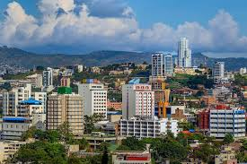

Honduras, oficialmente República de Honduras, es un país ubicado en el centro-norte de América Central. Su capital es Distrito Central, formado por las ciudades de Tegucigalpa y Comayagüela.56
Honduras es un estado unitario y se autodefine como libre, soberano e independiente, unitario e indivisible. Limita al norte y este con el mar Caribe, al sureste con Nicaragua, al sur con el golfo de Fonseca y El Salvador, y al oeste con Guatemala.7La extensión territorial de Honduras, comprendiendo todas sus islas, es de 112 492 km².1
La organización territorial de Honduras divide el país, política y administrativamente, en 18 departamentos, y estos en municipios, para un total de 298 municipios.

La forma de gobierno es republicana, democrática y representativa. Se ejerce por tres poderes: Legislativo, Ejecutivo y Judicial, complementarios e independientes y sin relaciones de subordinación.89
La población de Honduras supera los 9 millones de habitantes,101112 dedicada en su mayor parte a las actividades agropecuarias, además del comercio, manufacturas, y servicios públicos entre otras actividades.
El departamento de Honduras con mayor densidad de población es Cortés con 400.3 hab./km².10El país es multiétnico, consta de cuatro grandes familias étnicas: los blancos o mestizos siendo la mayoría poblacional, los pueblos indígenas como los: lencas, misquitos, tolupanes, chortis, pech, tawahkas, garífunas y criollos de habla inglesa.
El territorio de Honduras es muy accidentado, lo forman altas filas de montañas, elevadas planicies, valles profundos en los que se encuentran llanos extensos y fértiles cruzados por ríos más o menos caudalosos y algunos navegables,13 todo lo cual contribuye a su rica biodiversidad.14Se estima que en Honduras existen unas 8000 especies de plantas, alrededor de 250 de reptiles y anfibios, más de 700 especies de aves y 110 especies de mamíferos, distribuidos en las diferentes regiones.
Honduras declaró su Independencia de España el 15 de septiembre de 1821. En enero de 1839, se adoptó formalmente la primera constitución del país. El general Francisco Ferrera se convirtió en el primer presidente constitucional (1841-43) del país.8 En 1891 se fundó el primer partido político, el Partido Liberal de Honduras, y en 1902 el Partido Nacional de Honduras, los cuales han gobernado el país desde entonces. Con la constitución de 1982 y las elecciones generales de 1981 comienza la llamada Era Democrática. En 2009 el país atraviesa la mayor de sus crisis políticas y sociales, que incluyó un golpe de Estado al Poder Ejecutivo y que fraccionó al Partido Liberal.